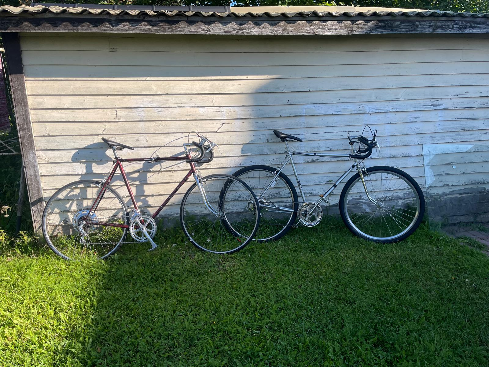
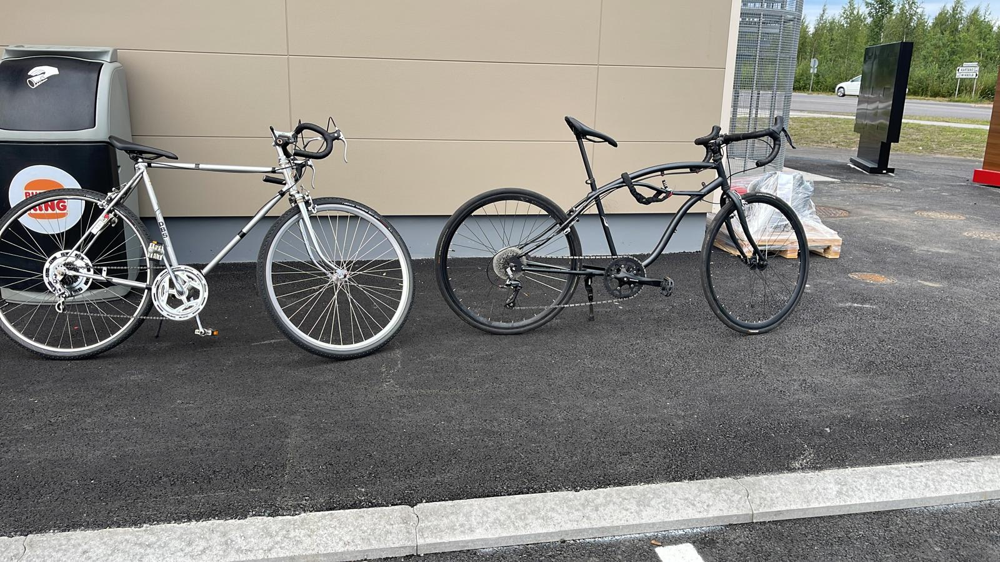
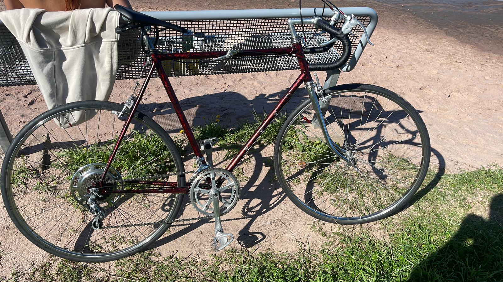

01
The Crimson
The Crimson
Classic
1970s steel road frame, deep burgundy respray with hand-polished chrome. Drop bars, leather wrap, and a ride that purrs.
Refurbished — Reimagined — Reborn
We rescue forgotten bicycles and transform them into sleek, modern machines. Every Z Bike carries a story from the past — polished for the future.
Explore CollectionThe Collection

1970s steel road frame, deep burgundy respray with hand-polished chrome. Drop bars, leather wrap, and a ride that purrs.

Restored chrome touring frame turned urban commuter. Clean lines, minimal branding, maximum presence on the street.
Blacked-out gravel build on a vintage steel frame. Modern Shimano drivetrain meets old-world craftsmanship. All road, no limits.

A beach-side beauty. Deep crimson frame with wrapped drops, built for long sunset rides along Yyteri's coastline.
Our Story
Z Bikes started in a garage in Pori, Finland — with a rusty frame, a can of paint, and the belief that beautiful things shouldn't end up in landfills.
Every bicycle we rescue has lived a life. Some were racing machines in the 70s. Others carried groceries across town for decades. We strip them down to bare steel, repair what needs fixing, and rebuild them as sleek modern rides that turn heads on every street corner.
We're not a factory. We're craftspeople. Each Z Bike is a one-of-one build — unique history, unique character, unmistakable style.
The Process
We hunt flea markets, barns, and online listings across Finland for forgotten steel frames with potential.
Every frame is stripped to bare metal. We inspect for cracks, corrosion, and alignment before any work begins.
Professional respray, chrome polishing, new bearings. The frame gets a second life with modern components.
Final assembly, test ride, and dialing in the perfect fit. Your Z Bike is ready for the streets.
“ Every dent tells a story.
We just give it a new chapter. ”